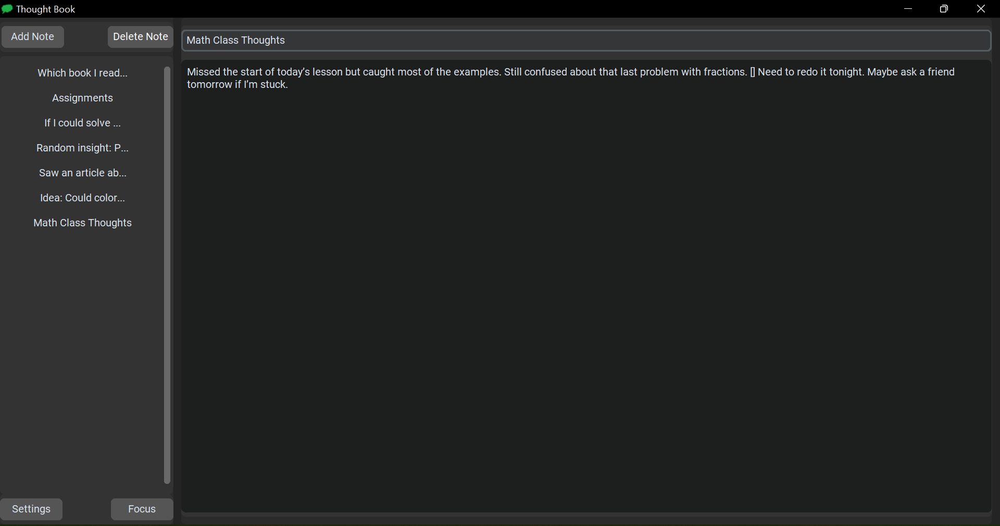

Thought Book is a fast, offline-first note app for Windows.
It gives you a private space to capture your thoughts — without cloud logins, syncing delays, or internet
distractions.

Why Thought Book?
Offline & Private: Notes are saved locally, encrypted, and never sent online.
Simple Protection: One-password lock and recovery code for your notes.
Clean Interface: Dark theme, sidebar navigation, auto-save.
Upgrade Anytime: Unlock unlimited notes and premium features easily.